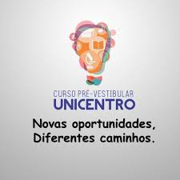
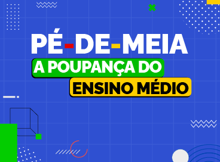
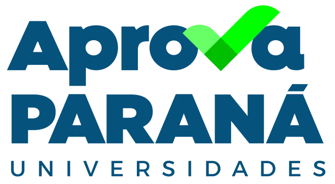

Curso pré-vestibular Unicentro
A Unicentro oferece aulas preparatórias para o seu vestibular promovidas pela Diretoria de Extensão da Pró-Reitoria de Extensão e Cultura (Proec).
O projeto disponibiliza, de forma acessível, aulas com professores formados na própia universidade, visando principalmente as provas para ingresso na instituição. As atividades são realizadas no campus Santa Cruz em Guarapuava.
Pé de meia
O pé de meia é um programa federal que visa reduzir a evasão escolar por meio de incentivo financeiro a.
Através do pé de meia, estudantes matriculados no ensino médio público, e em situação de vulnerabilidade econômica, têm a oportunidade de receberem bolsas mensais e anuais, portanto que prossigam com os estudos. O projeto não só auxilia estudades como também auxilia a economia estimulando o consumo interno em nosso mercado.
Aprová Paraná
O programa configura uma alternativa mais acessível de ingresso às instituições estaduais aos vestibulares tradicionais.
O sistema Aprová Paraná Universidades trata-se de uma nova modalidade de avaliação para ingresso no ensino superior realizada somente em colégios públicos. Por meio do mesmo, alunos podem cursar universidades como: Unicentro, UEL, UEM, UEPG, entre outras.